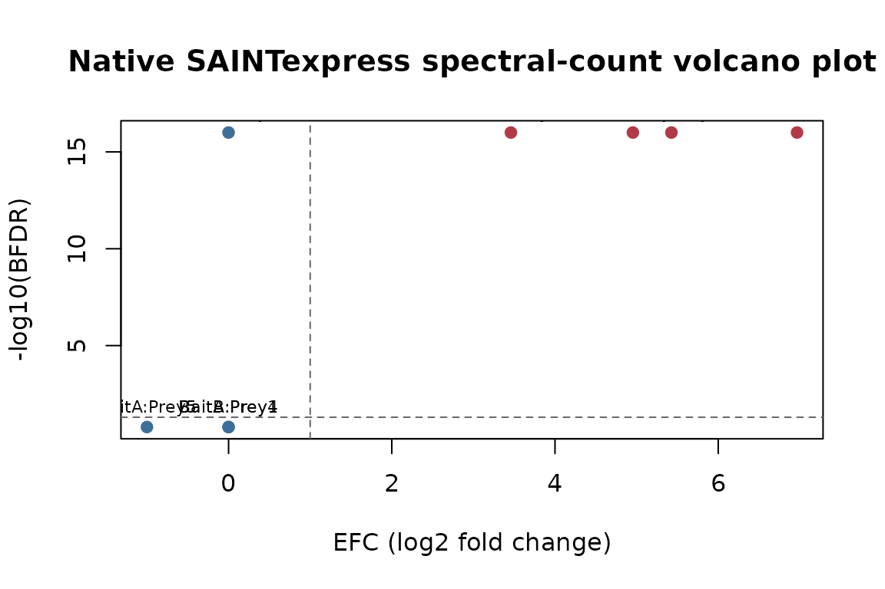
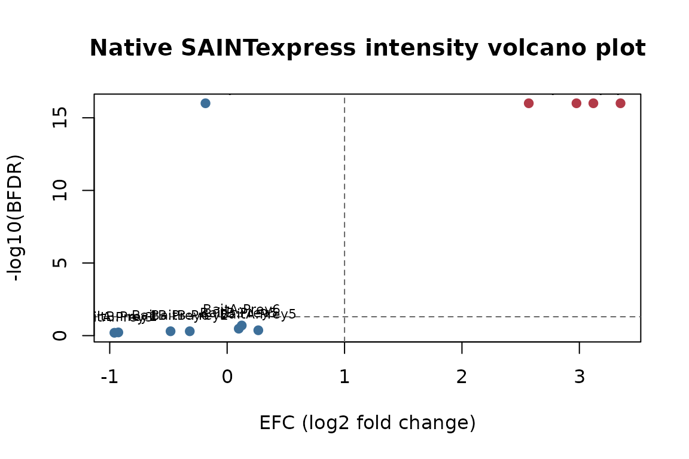

Running native SAINTexpress on simulated input
Source:vignettes/saintexpressbin.Rmd
saintexpressbin.RmdThis vignette runs the native SAINTexpress-spc and
SAINTexpress-int C++ binaries shipped by
saintexpressbin on a small simulated AP-MS experiment.
The simulated dataset matches the one in saintexpress’s
vignette so you can compare the native scores to the pure-R
implementation directly.
Check binary availability
saintexpressbin::saintexpress_executable("spc")
#> [1] "/home/runner/work/_temp/Library/saintexpressbin/bin/Linux64/SAINTexpress-spc"
saintexpressbin::saintexpress_executable("int")
#> [1] "/home/runner/work/_temp/Library/saintexpressbin/bin/Linux64/SAINTexpress-int"
saintexpressbin::saintexpress_available("spc")
#> [1] TRUEThe chunks below skip execution unless a native binary is resolvable for the current platform.
Simulate a small AP-MS experiment
Same generator as the saintexpress vignette.
simulate_si <- function(seed = 42, mode = c("spc", "int")) {
mode <- match.arg(mode)
set.seed(seed)
preys <- paste0("Prey", 1:6)
baits <- c("BaitA", "BaitA", "BaitB", "BaitB", "Ctrl1", "Ctrl2")
ips <- paste0("IP", seq_along(baits))
cort <- c("T", "T", "T", "T", "C", "C")
# One row per IP x prey; recover the bait for each IP.
grid <- expand.grid(ipId = ips, preyId = preys, stringsAsFactors = FALSE)
grid$baitId <- baits[match(grid$ipId, ips)]
# A prey is enriched ("signal") only for its true bait; everything else is background.
signal <- (grid$baitId == "BaitA" & grid$preyId %in% c("Prey1", "Prey2")) |
(grid$baitId == "BaitB" & grid$preyId %in% c("Prey3", "Prey4"))
# Draw every quantity in one vectorized call.
if (mode == "spc") {
lambda <- ifelse(signal, ifelse(grid$baitId == "BaitA", 20, 15), 0.5)
grid$quant <- stats::rpois(nrow(grid), lambda)
} else {
mu <- ifelse(signal, ifelse(grid$baitId == "BaitA", 1e7, 5e6), 1e4)
grid$quant <- stats::rexp(nrow(grid), 1 / mu)
}
inter <- grid[grid$quant > 0, c("ipId", "baitId", "preyId", "quant")]
rownames(inter) <- NULL
list(
inter = inter,
prey = data.frame(preyId = preys, preyLength = 500L, preyGeneId = preys,
stringsAsFactors = FALSE),
bait = data.frame(ipId = ips, baitId = baits, CorT = cort,
stringsAsFactors = FALSE)
)
}Spectral-count scoring with the native binary
si_spc <- simulate_si(mode = "spc")
workdir <- tempfile("saintexpressbin-spc-")
dir.create(workdir)
res_spc <- saintexpressbin::saintexpress_run(
si_spc,
type = "spc",
workdir = workdir,
cleanup = TRUE,
use_docker = FALSE
)
#> Input files are: /tmp/RtmpCvtjEv/saintexpressbin-spc-1dcb1a2a258d/inter.txt, /tmp/RtmpCvtjEv/saintexpressbin-spc-1dcb1a2a258d/prey.txt, /tmp/RtmpCvtjEv/saintexpressbin-spc-1dcb1a2a258d/bait.txt
#> Interaction file: "/tmp/RtmpCvtjEv/saintexpressbin-spc-1dcb1a2a258d/inter.txt"
#> Prey file: "/tmp/RtmpCvtjEv/saintexpressbin-spc-1dcb1a2a258d/prey.txt"
#> Bait file: "/tmp/RtmpCvtjEv/saintexpressbin-spc-1dcb1a2a258d/bait.txt"
#> GO file: ""
#> Parsing prey file /tmp/RtmpCvtjEv/saintexpressbin-spc-1dcb1a2a258d/prey.txt ...done.
#> Parsing prey file /tmp/RtmpCvtjEv/saintexpressbin-spc-1dcb1a2a258d/bait.txt ...done.
#> Parsing interaction file /tmp/RtmpCvtjEv/saintexpressbin-spc-1dcb1a2a258d/inter.txt ...done.
#> Setting matrix indices for each interaction...done.
#> Creating matrix...done.
#> Creating a list of unique interactions...done.
res_spc$list[, c("Bait", "Prey", "AvgP", "BFDR", "SaintScore")]
#> Bait Prey AvgP BFDR SaintScore
#> 1 BaitA Prey1 1.00 0.00 1.00
#> 2 BaitB Prey1 0.00 0.16 0.00
#> 3 BaitA Prey2 1.00 0.00 1.00
#> 4 BaitB Prey3 1.00 0.00 1.00
#> 5 BaitA Prey4 0.00 0.16 0.00
#> 6 BaitB Prey4 1.00 0.00 1.00
#> 7 BaitA Prey5 0.00 0.16 0.00
#> 8 BaitB Prey6 0.22 0.00 0.22Top hits per bait — the true interactors should rank first by
AvgP:
top_per_bait <- function(df) {
df <- df[order(df$Bait, -df$AvgP), ]
do.call(rbind, by(df, df$Bait, head, 2))
}
top_per_bait(res_spc$list)[, c("Bait", "Prey", "AvgP", "BFDR")]
#> Bait Prey AvgP BFDR
#> BaitA.1 BaitA Prey1 1 0
#> BaitA.3 BaitA Prey2 1 0
#> BaitB.4 BaitB Prey3 1 0
#> BaitB.6 BaitB Prey4 1 0Spectral-count volcano plot
The native result includes FoldChange and
BFDR. We plot the effect-size coordinate (EFC,
here log2(FoldChange)) against the false-discovery
coordinate.
plot_volcano <- function(scores, title) {
volcano_data <- scores
volcano_data$EFC <- log2(volcano_data$FoldChange)
volcano_data$neg_log10_bfdr <- -log10(pmax(volcano_data$BFDR, 1e-16))
volcano_data$is_hit <- volcano_data$BFDR <= 0.05 & volcano_data$EFC >= 1
plot(
volcano_data$EFC,
volcano_data$neg_log10_bfdr,
pch = 19,
col = ifelse(volcano_data$is_hit, "#B23A48", "#3D6F99"),
xlab = "EFC (log2 fold change)",
ylab = "-log10(BFDR)",
main = title
)
abline(h = -log10(0.05), lty = 2, col = "grey40")
abline(v = 1, lty = 2, col = "grey40")
text(
volcano_data$EFC,
volcano_data$neg_log10_bfdr,
labels = paste(volcano_data$Bait, volcano_data$Prey, sep = ":"),
pos = 3,
cex = 0.7
)
}
plot_volcano(res_spc$list, "Native SAINTexpress spectral-count volcano plot")
Intensity scoring with the native binary
si_int <- simulate_si(mode = "int")
workdir <- tempfile("saintexpressbin-int-")
dir.create(workdir)
res_int <- saintexpressbin::saintexpress_run(
si_int,
type = "int",
workdir = workdir,
cleanup = TRUE,
use_docker = FALSE
)
#> Input files are: /tmp/RtmpCvtjEv/saintexpressbin-int-1dcb4da76b48/inter.txt, /tmp/RtmpCvtjEv/saintexpressbin-int-1dcb4da76b48/prey.txt, /tmp/RtmpCvtjEv/saintexpressbin-int-1dcb4da76b48/bait.txt
#> Interaction file: "/tmp/RtmpCvtjEv/saintexpressbin-int-1dcb4da76b48/inter.txt"
#> Prey file: "/tmp/RtmpCvtjEv/saintexpressbin-int-1dcb4da76b48/prey.txt"
#> Bait file: "/tmp/RtmpCvtjEv/saintexpressbin-int-1dcb4da76b48/bait.txt"
#> GO file: ""
#> Parsing prey file /tmp/RtmpCvtjEv/saintexpressbin-int-1dcb4da76b48/prey.txt ...done.
#> Parsing prey file /tmp/RtmpCvtjEv/saintexpressbin-int-1dcb4da76b48/bait.txt ...done.
#> Parsing interaction file /tmp/RtmpCvtjEv/saintexpressbin-int-1dcb4da76b48/inter.txt ...done.
#> Setting matrix indices for each interaction...done.
#> Creating matrix...done.
#> Creating a list of unique interactions...done.
#> L is larger than the number of control IPs.
top_per_bait(res_int$list)[, c("Bait", "Prey", "AvgP", "BFDR")]
#> Bait Prey AvgP BFDR
#> BaitA.1 BaitA Prey1 1 0
#> BaitA.3 BaitA Prey2 1 0
#> BaitB.6 BaitB Prey3 1 0
#> BaitB.8 BaitB Prey4 1 0
plot_volcano(res_int$list, "Native SAINTexpress intensity volcano plot")
See also
For the pure-R implementation of the same scoring, see saintexpress.
The two engines are compared side by side on the TIP49 reference dataset
in prolfquasaint.
Session information
sessionInfo()
#> R version 4.6.0 (2026-04-24)
#> Platform: x86_64-pc-linux-gnu
#> Running under: Ubuntu 24.04.4 LTS
#>
#> Matrix products: default
#> BLAS: /usr/lib/x86_64-linux-gnu/openblas-pthread/libblas.so.3
#> LAPACK: /usr/lib/x86_64-linux-gnu/openblas-pthread/libopenblasp-r0.3.26.so; LAPACK version 3.12.0
#>
#> locale:
#> [1] LC_CTYPE=C.UTF-8 LC_NUMERIC=C LC_TIME=C.UTF-8
#> [4] LC_COLLATE=C.UTF-8 LC_MONETARY=C.UTF-8 LC_MESSAGES=C.UTF-8
#> [7] LC_PAPER=C.UTF-8 LC_NAME=C LC_ADDRESS=C
#> [10] LC_TELEPHONE=C LC_MEASUREMENT=C.UTF-8 LC_IDENTIFICATION=C
#>
#> time zone: UTC
#> tzcode source: system (glibc)
#>
#> attached base packages:
#> [1] stats graphics grDevices utils datasets methods base
#>
#> loaded via a namespace (and not attached):
#> [1] crayon_1.5.3 vctrs_0.7.3 cli_3.6.6
#> [4] knitr_1.51 rlang_1.2.0 xfun_0.58
#> [7] saintexpressbin_0.0.1 otel_0.2.0 textshaping_1.0.5
#> [10] jsonlite_2.0.0 bit_4.6.0 glue_1.8.1
#> [13] htmltools_0.5.9 ragg_1.5.2 sass_0.4.10
#> [16] hms_1.1.4 rmarkdown_2.31 tibble_3.3.1
#> [19] evaluate_1.0.5 jquerylib_0.1.4 tzdb_0.5.0
#> [22] fastmap_1.2.0 yaml_2.3.12 lifecycle_1.0.5
#> [25] compiler_4.6.0 fs_2.1.0 pkgconfig_2.0.3
#> [28] htmlwidgets_1.6.4 systemfonts_1.3.2 digest_0.6.39
#> [31] R6_2.6.1 tidyselect_1.2.1 readr_2.2.0
#> [34] parallel_4.6.0 vroom_1.7.1 pillar_1.11.1
#> [37] magrittr_2.0.5 bslib_0.11.0 bit64_4.8.2
#> [40] tools_4.6.0 pkgdown_2.2.0 cachem_1.1.0
#> [43] desc_1.4.3